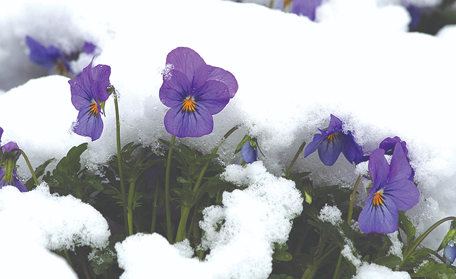
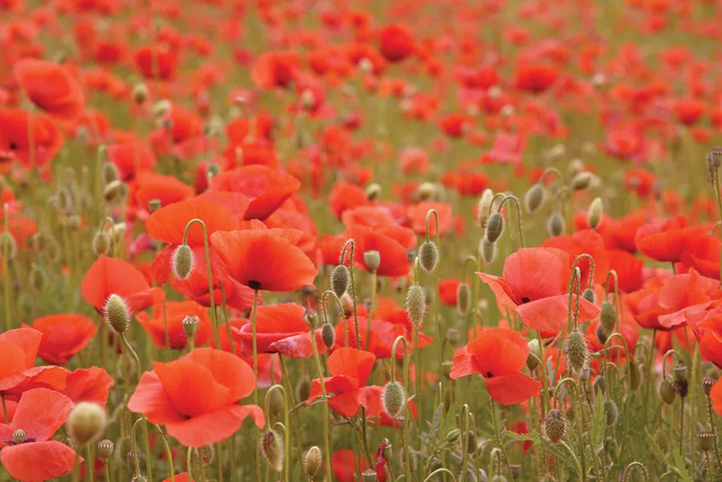

- გვარი: Rosa
- ოჯახი: Rosaceae (ვარდისებრნი)FD
- წარმოშობა: ყვითელი ფერი მიღებულია Rosa foetida-დან, რომელიც XVI საუკუნიდან ცნობილია.
- კლასიფიკაცია: მიეკუთვნება თანამედროვე ჰიბრიდულ ვარდებს. ძირითადი ჯგუფებია:
- Hybrid Tea დიდი, ელეგანტური ყვავილები
- Floribunda მრავალი პატარა ყვავილი ერთ ღეროზე
- Grandiflora ჩაისა და ფლორიბუნდას შერწყმა
- Shrub Roses ბუჩქოვანი, გამძლე ფორმები
ია

მთავარი ფაქტები იაზე
- გვარი: Viola
- ოჯახი: Violaceae
- სახეობები: დაახლოებით 500–680 სახეობა, მათ შორის მრავალფეროვანი ჯიშები და ჰიბრიდები.
- გავრცელება: ყველაზე ხშირად გვხვდება ზომიერ კლიმატში — ევროპაში, აზიაში, ჩრდილოეთ ამერიკაში; ასევე
გავრცელებულია ჰავაიში, ავსტრალიაში და სამხრეთ ამერიკის ანდებში.
- მცენარის ტიპი: შეიძლება იყოს ერთწლოვანი ან მრავალწლოვანი ბალახოვანი მცენარე, ზოგჯერ პატარა ბუჩქიც.
- გამოყენება: ია პოპულარულია ბაღებში და ოთახის მცენარედ, ასევე ხშირად გამოიყენება დეკორაციებში და თაიგულებში.
- სიმბოლიკა: თავმდაბლობა, სიწმინდე, ერთგულება.
ყაყაჩო

- გვარი: Papaver
- ოჯახი: Papaveraceae
- სახეობები: 70-ზე მეტი სახეობა, მათ შორის ყველაზე ცნობილი — წითელი ყაყაჩო (Papaver rhoeas).
- გავრცელება: იზრდება ევროპაში, აზიაში და ჩრდილოეთ ამერიკაში; ხშირად გვხვდება მინდვრებში და გზისპირებში.
- სიმბოლიკა: ასოცირდება მშვიდობასთან, ხსოვნასთან და მსხვერპლის პატივისცემასთან (განსაკუთრებით პირველი მსოფლიო
ომის შემდეგ).
- გამოყენება: დეკორატიული მცენარეა, ზოგიერთ სახეობას სამკურნალო და სამრეწველო დანიშნულებაც აქვს.